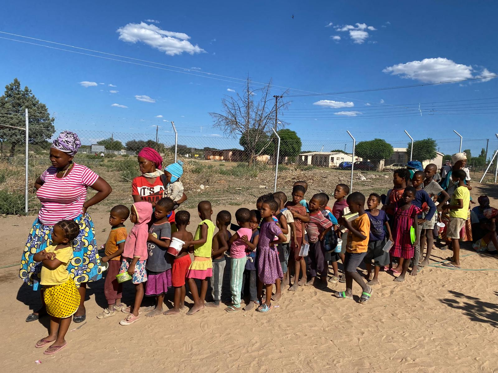
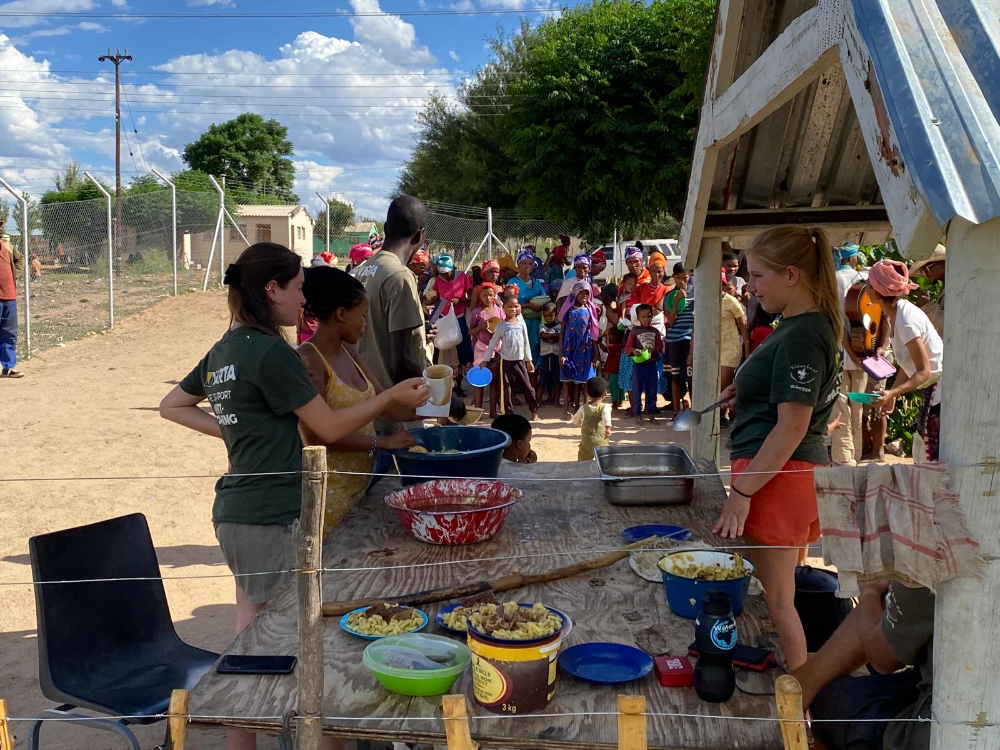
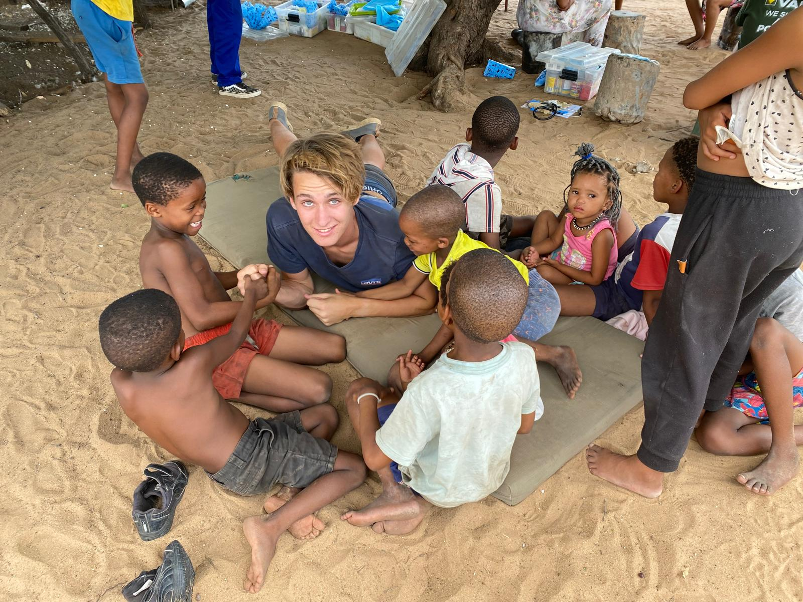
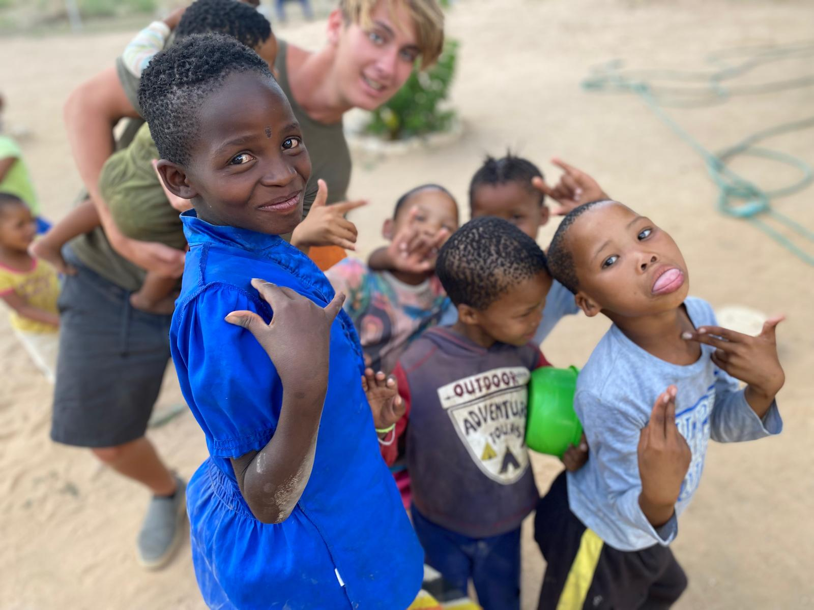
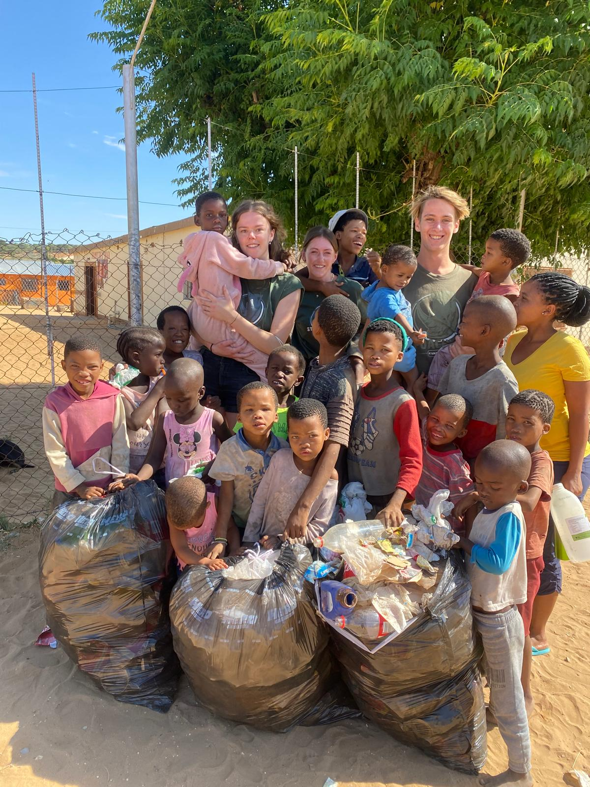
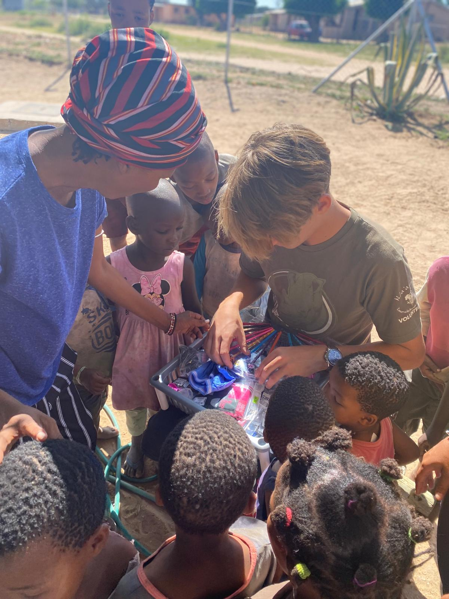
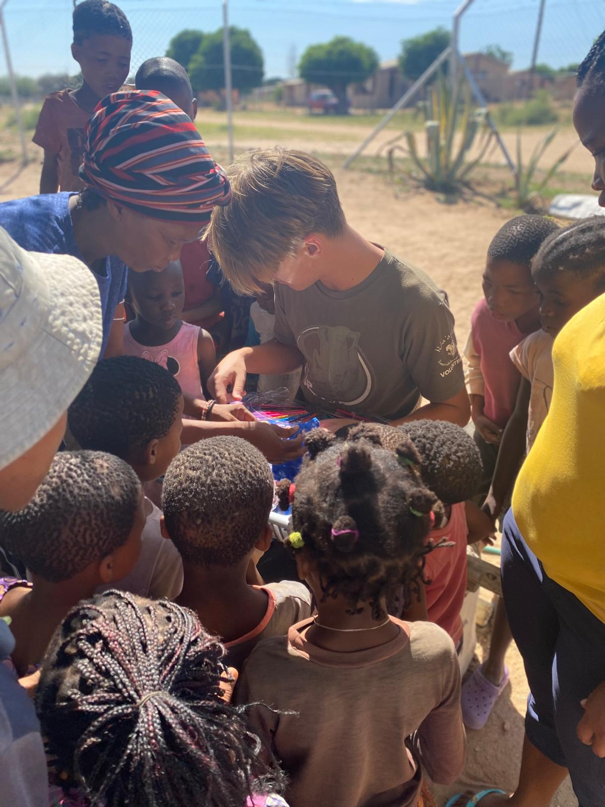

While volunteering at a hospital in Namibia, I noticed the town of Epukukiro was covered in litter, with trash scattered across the streets. I started a simple incentive program to address the problem. What began as a one day experiment with 25 kids has grown into a sustainable community initiative that continues to run four years later.
The streets of Epukukiro were dirty. People disposed of their trash wherever they could, and it had spread across the town. There was no organized waste collection, and the litter had become part of daily life.
On the first day, I gathered 25 kids and took them out to the streets. I gave each of them a small bag to fill with trash. A few days earlier, I had bought some toys in Windhoek, and I traded those for the filled bags. It worked. The kids were motivated, and we collected a significant amount of trash in just one session.
I kept running the program, and it grew. After a few weeks, I returned to the hospital where I was volunteering to speak with the owners, Dr. Rudie van Vuuren and Marlice van Vuuren. I asked if they could keep the program running after I left for South Africa. They agreed.
The program is still running. The incentive has evolved from toys to food. Previously, the hospital distributed meals to everyone on Tuesdays and Thursdays. Now, anyone who is able is expected to bring a full bag of trash in exchange for a nutritious meal.
Just last week, I received a picture from the cleaner at the hospital showing the program in action. What started as a small experiment has become a sustainable part of the community.






